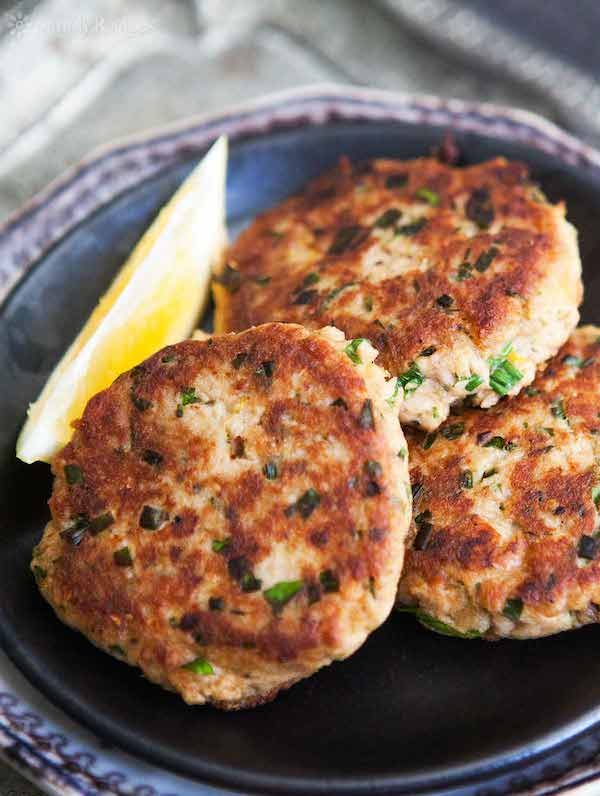

HOME

Hamburguesa de Atún
Lleva varios años publicada en mi perfil y sigo recibiendo mensajes de seguidores que me dicen lo mucho que les gusta y que a menudo la preparan en casa
Mi toque personal: una deliciosa salsa tártara que la acompaña
Ingredientes
Para la torta
- 150g de atún en conserva
- 20g de cebolla morada
- perejil fresco
- 1 huevo
- 1 cucharada de mostaza
- 15 - 20g de pan rallado
- Sal
- Pimienta
- Aceite de oliva
Para la salsa
- 1 huevo
- 200ml de aceite de oliva
- 1 cucharadita de pepinillos
- 1 cucharadita de alcaparras
- 1 cucharadita de cebolla morada
- 1 cucharadita de mostaza Dijon
Preparación
- En un bowl, mezclamos el atún desmenuzado y bien escurrido con la cebolla y el perejil muy picados, el huevo batido, la moztaza, la sal y pimienta.
- Añadimos el pan rallado poco a poco hasta ligar bien y conseguir una textura que nos permita dar forma a las hamburgesas.
- Emulsionar el huevo y el aceite y añadimos el resto de ingredientes y trituramos.
- Cocinar las hamburgesas por 2-3 minutos por cada lado.
- Servimos con la salsa tártara.